花枝鼠基础科普
花枝鼠是经过百年人工驯化的宠物鼠，和野外老鼠不是同一品系。它们干净、亲人、智商高，是很受欢迎的小型家养宠物。
花枝鼠性格温和，很少咬人，能记住主人气味，也可以训练一些小技能。平均寿命约2~3年，饲养成本不高，比较适合新手和学生饲养。
自家花枝实拍相册
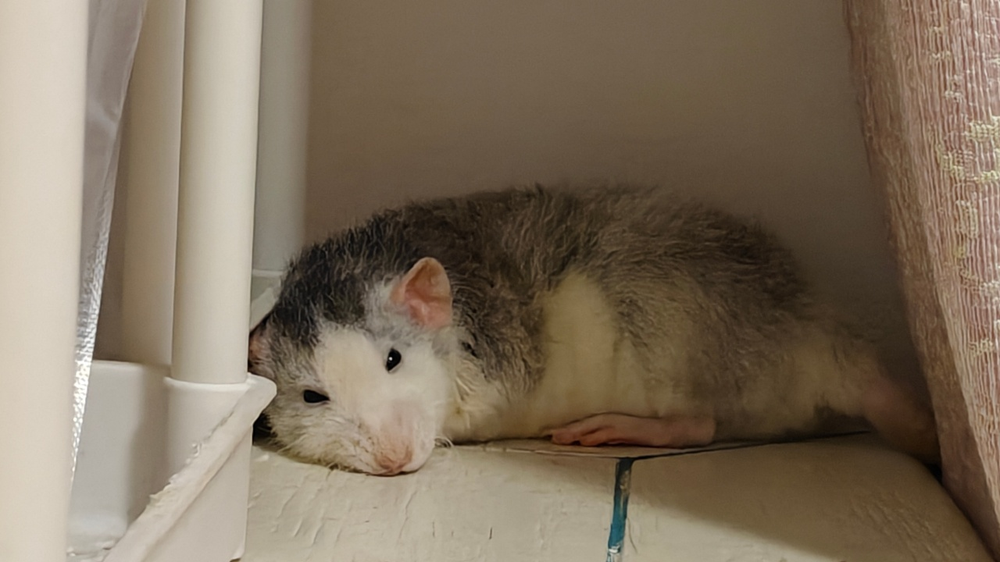
角落慵懒摆烂
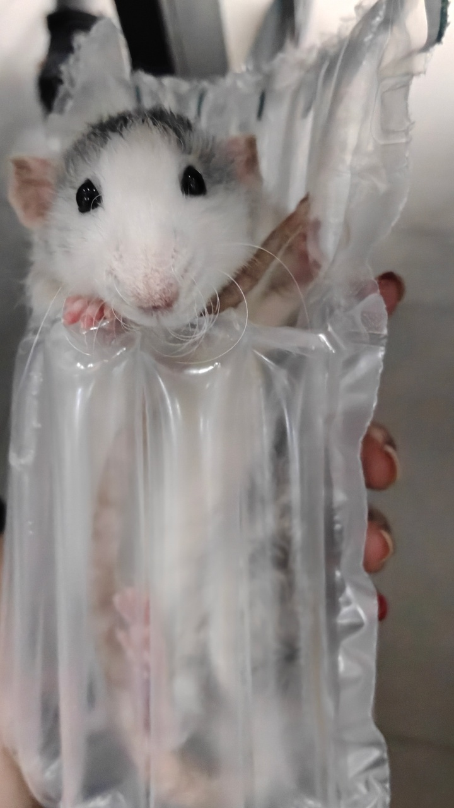
塑料袋探头好奇
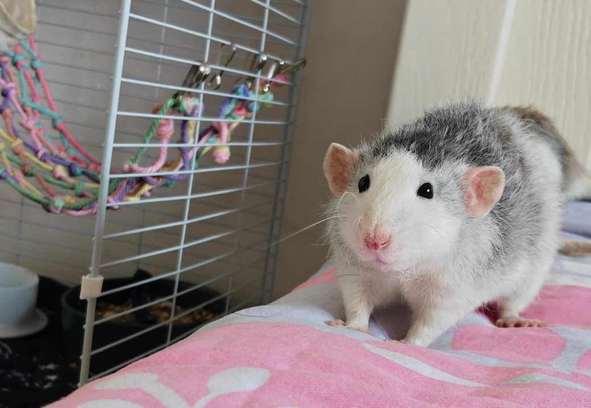
床上乖乖看镜头
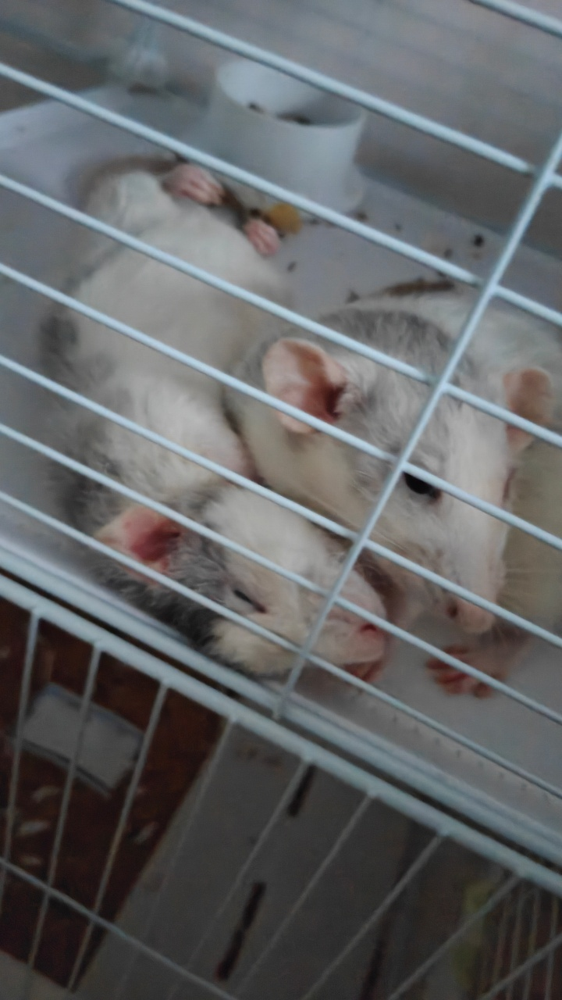
两只抱团睡觉
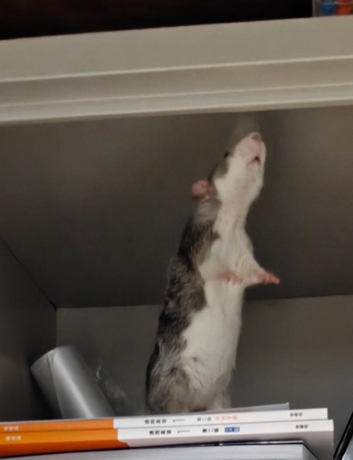
站立讨食
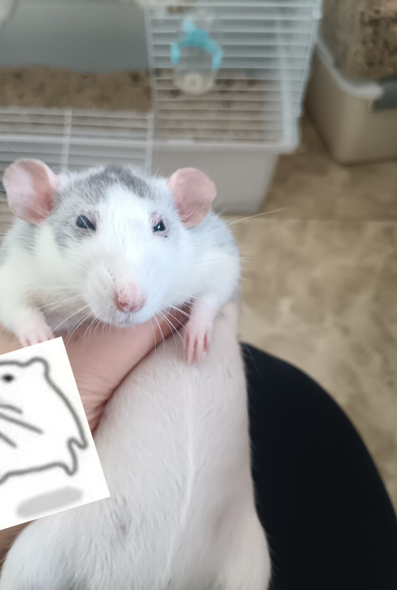
手心贴贴撒娇
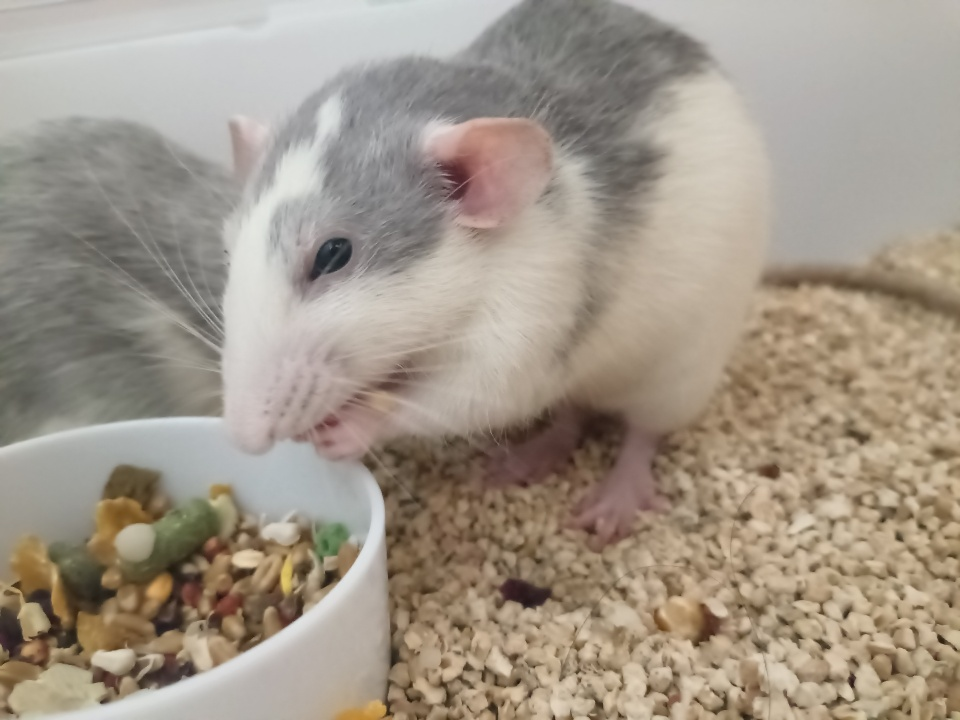
埋头干饭吃粮
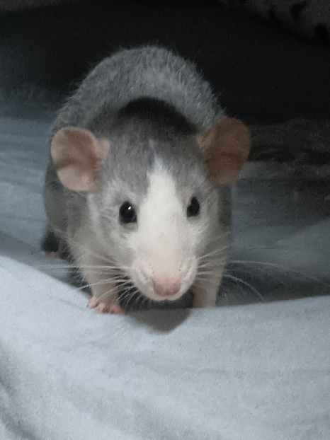
被窝探头特写
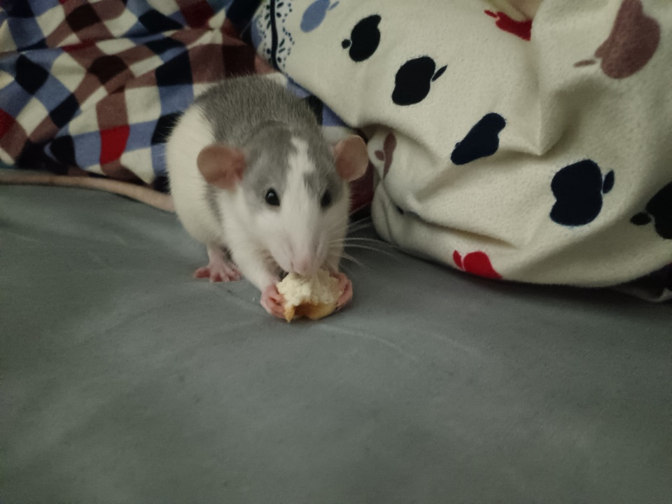
抱着面包干饭
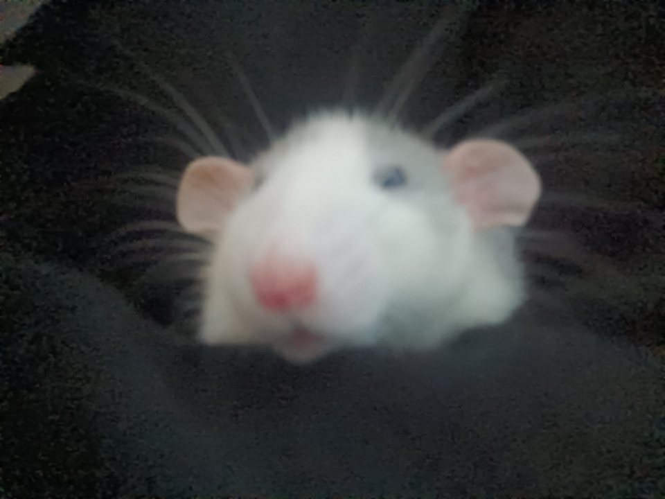
粉鼻头怼脸拍
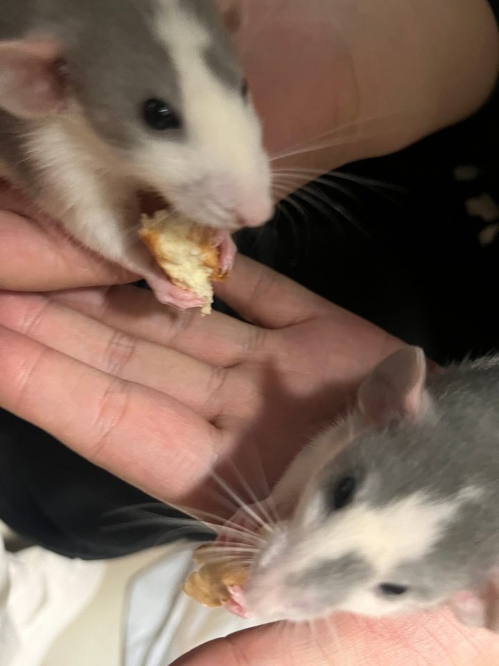
双手分食零食
花枝鼠性格特点
温顺亲人
花枝鼠经过多代家养驯化，性格稳定，一般不会主动攻击人，上手撸的时候比较放松。
智商较高
它们能识别主人声音和气味，也可以训练躺手、回笼、转圈等简单互动。
适合群居
花枝鼠喜欢有同伴，同窝同性一起饲养通常更稳定，长期独居可能会显得孤单。
作息安静
它们白天大多睡觉，傍晚和夜间活动，只要笼子空间足够，不会特别吵闹。
恶菌科普辟谣
误区1：花枝鼠和野鼠一样脏
花枝鼠是定向繁育的宠物鼠，不是下水道野鼠，日常会自己清洁身体，定期打扫笼子基本没有明显体味。
误区2：养花枝鼠会带病菌
正规家养宠物花枝鼠的环境和来源相对干净，只要不接触不明野鼠、不混用野外垫料，风险很低。
误区3：被它咬了就一定会出事
花枝鼠很少主动咬人。如果被咬伤，先冲洗消毒；伤口较深或出现异常反应，再及时就医。
新手饲养教程
居住环境
选择通风良好的笼子，配备垫料、窝、跑轮和饮水器。环境温度保持在20~26℃比较合适。
饮食搭配
主食可以选择专用鼠粮，少量搭配蔬菜和蛋白质零食。不要喂巧克力、洋葱、牛油果等危险食物。
日常护理
不需要频繁水洗，它们会自我清洁。每周清理笼子，定期检查指甲、牙齿和精神状态。
健康观察
出现精神差、不吃东西、呼吸异常、拉稀等情况要及时处理。平时保持环境干净，减少粉尘和异味。